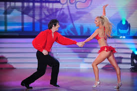

Origen del Merengue
El merengue nació en la República Dominicana en el siglo XIX. Es una fusión de elementos musicales africanos, europeos y taínos. Originalmente fue considerado música de las clases bajas, pero con el tiempo se convirtió en un símbolo de unidad nacional.
Características
- Ritmo rápido en compás de 2/4.
- Instrumentos como la güira, tambora y acordeón.
- Baile en pareja con pasos laterales y movimiento de caderas.
- Letras alegres, costumbristas o sociales.
Impacto Cultural y Evolución
El merengue ha trascendido fronteras. No solo es la música nacional de la República Dominicana, sino que también ha influido en otros géneros del Caribe. En los años 80 y 90, se popularizó internacionalmente gracias a artistas como Juan Luis Guerra, Wilfrido Vargas y Johnny Ventura.
Este género ha acompañado las luchas sociales y los momentos históricos del pueblo dominicano. Además, su aceptación en todos los estratos sociales lo ha convertido en un símbolo de identidad y orgullo.
Hoy en día, el merengue se presenta en versiones modernas como el merengue electrónico, mezclando beats actuales con la esencia tradicional. Su inclusión en eventos internacionales y su declaración como Patrimonio Cultural Inmaterial de la Humanidad por la UNESCO en 2016 reafirman su relevancia.
Artistas Destacados del Merengue
Aquí te mostramos algunos de los artistas más influyentes en la historia del merengue:
| Nombre | Años Activo | Contribución |
|---|---|---|
| Johnny Ventura | 1960–2021 | Modernizó el merengue con arreglos orquestales y fue un ícono cultural. |
| Wilfrido Vargas | 1970–presente | Internacionalizó el merengue con fusiones innovadoras. |
| Juan Luis Guerra | 1980–presente | Llevó el merengue y la bachata a nivel global con letras poéticas. |
| Milly Quezada | 1980–presente | Conocida como "La Reina del Merengue", con gran influencia femenina. |